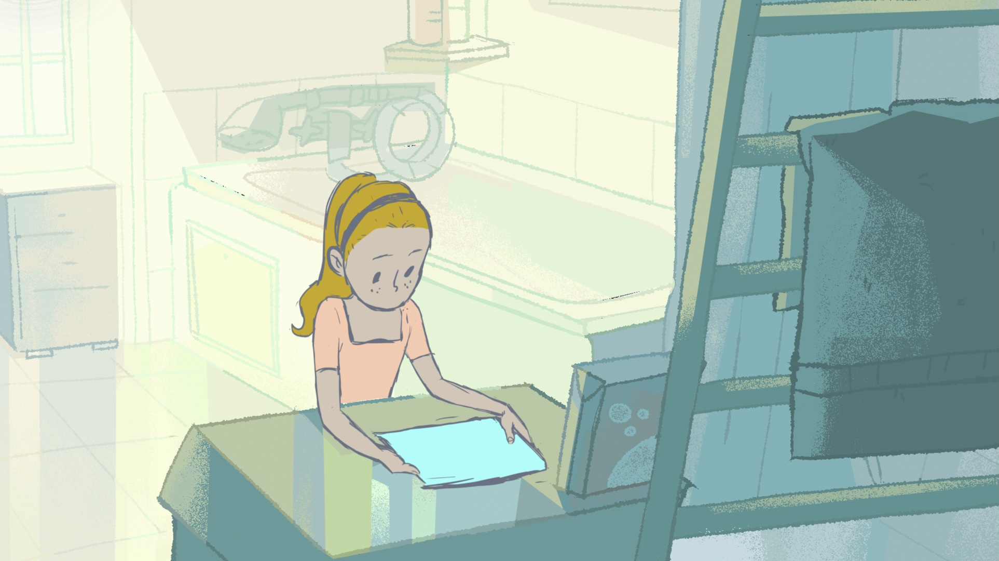

News
Soul Shift
14/02/2025
Soul Shift, animated science-fiction comedy series, will premiere in the competition at Cartoons on the bay – International Festival of Animation, Transmedia and Meta-Arts!
Wolfie
10/02/2025
A brief description of another exciting news article. This will entice readers to click and learn more about the topic.
Film Premiere Announcement

05/02/2025
Details about an upcoming film premiere, including dates, venues, and what makes this film a must-see for audiences.